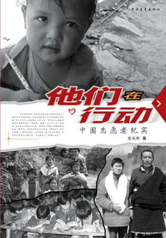

《他们在行动--中国志愿者纪实》
桂电志愿者网 日期：2015-07-15 来源：人民网文化频道

《他们在行动--中国志愿者纪实》序：心灵的选择
徐本禹，一个注定会感动更多中国人的人。华中农业大学2003届毕业生，以372分的高分考取了本校的硕士研究生，却推迟两年入学到贵州省大方县大水乡支教……
莫锋，一个不忍触碰的名字。2003年毕业于北京大学，放弃了深圳月薪7000元的工作，毅然到内蒙古巴林右旗支医，一年后扎根在当地。远在广东的母亲患癌症期间他没有好好尽孝是莫锋心里永远的遗憾……
《周毅，一个了不起的村官。2003年从浙江工程学院（现浙江理工大学）毕业，放弃东部优越的工作条件，参加“大学生志愿服务西部计划”，到四川省沐川县海云乡同心村当起了村官…………
以记录志愿者生动故事的报告文学《他们在行动――中国志愿者纪实》一书，目前由中国青年出版社出版发行。全书共28万字，以中国百万志愿者服务于城乡公益事业、献身于遥远山乡的浩浩群体为壮阔背景，选取那些特别感动苍天、激励人心、震撼灵魂的足迹，以这些特别动人的青春抉择、心灵搏斗、追求和奋斗为主线，写出了他们对中国社会发展进步尤其是对落后地区的发展所做出的不可磨灭的历史性贡献。那么多中国青年感人至深的人生选择和建树，他们与城市的恋人分手，在穷乡僻壤中找到新的爱情，他们的足迹散落在祖国的边疆、山山水水。在这浩瀚的故事中，作者娓娓道来一个个让人感动、震撼的故事，讲述了一群可爱的志愿者，他们有“全国大学生志愿服务西部计划”的志愿者，有支教扶贫的中直机关青年干部，有高校扶贫接力计划的研究生支教团，有身为镇长的戒毒志愿者，有活跃在大学校园里从事骨髓捐赠、法律援助等项目的志愿者，有赴海外服务的志愿者。等等。
作者徐庆群，历时半年到宁夏、贵州、四川、内蒙古等地的乡村，深入实地寻访了一批人物，那样的山区小道、草原边疆，那样的青春抉择、心灵搏斗，那样的困惑与追求，感动与震撼……由于我国发达地区与贫困地区的差距，我们深信志愿者们在贫困地区所作的努力，是构建和谐社会极宝贵的民族财富。
全国作协全委会委员、人民日报社副总编辑梁衡同志说，这是一部开启人们心灵的好书。中国的志愿者已开始行动，这必将成为一种新兴文明。
《他们在行动――中国志愿者纪实》一书是中国作家协会重点扶持作品。
背景介绍：中国的志愿服务
中国志愿服务事业的萌起可追溯到前辈作家们并不陌生的邢燕子、侯隽那一代自愿上山下乡的第一代知青，这项事业曾经得到毛泽东主席的深刻关心。如今亿万农民离土离乡到城市来打工，人心思富，但是，每年都有近万名大学毕业生到农村，到边疆，到祖国最艰苦最需要的地方去志愿服务。
志愿者工作的大规模发展始于1993年共青团中央发起实施的中国青年志愿者行动。1994年12月5日，中国青年志愿者协会成立，这是中国唯一专门从事志愿服务事业的全国性非盈利社会组织，致力于帮助有特殊困难的社会成员，推动社会保障体系的建立和完善；消除贫困和落后；消灭公害和环境污染；普及科学文化知识，促进经济社会协调发展和全面进步；建立互助友爱的人际关系和良好的社会公德；开展与海内外志愿者组织和团体的交流。10多年来，中国青年志愿者协会的工作得到党和国家领导人的高度重视、各级党政部门的大力支持、基层人民的深切欢迎和关怀。青年志愿者行动从最初的组织动员阶段，到1996年实施扶贫接力计划，建立了志愿服务的长效机制；又从2001年实施志愿者注册制度，对志愿服务进行规范化管理，到2003年实施大学生志愿服务计划，青年志愿者行动迅速提升到一个高水准发展的新阶段，志愿服务的队伍、组织、项目、机制等各项建设深深根植于中国社会迫切需要的土壤，有了相当扎实的规模浩大的发展。
同时，中国的志愿服务是与社会主义市场经济发展同向并轨，也与国际社会发展接轨的事业。在欧洲，志愿服务事业已有近百年历史，志愿精神亦为全世界所崇敬。在2001国际志愿者年启动仪式上，联合国秘书长安南指出：“志愿精神的核心是服务、团结的理想和共同使这个世界变得更加美好的信念。从这个意义上我们可以说，志愿者精神是联合国精神的最终体现。”
【责任编辑：李博晶】